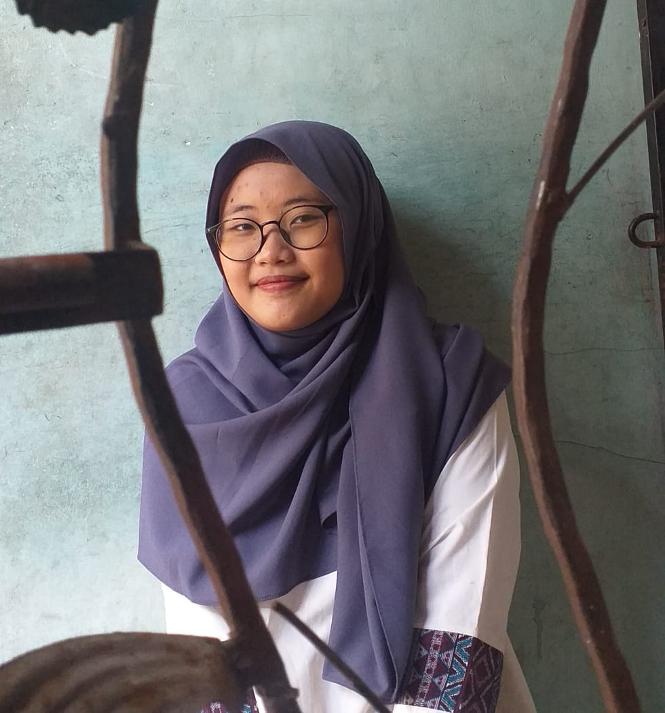

| Nama | Dliya Fathiyyah Fatin |
| Asal Sekolah | SMK-SMAK Bogor |
| Tempat Tanggal Lahir | Tangerang, 30/11/2003 |
| Umur | 17 |
| Hobby | Modern Dance |

Hi Guys, Nama aku Dliya Fathiyyah Fatin dari SMK-SMAK Bogor yang sekarang sedang menginjak tingkat kelas 11. Kali ini aku mau berbagi pengalaman ku selama kegiatan pembelajaran daring semasa pandemi Covid-19.
First of all, izinkan aku bercerita sedikit tentang kesibukan sekolahku semasa offline. Sekolah aku adalah sekolah kejuruan dimana anak didiknya dipersiapkan untuk bekerja setelah lulus, sehingga tentu saja kegiatan sekolah lebih berfokus pada pembelajaran praktik. Sebelum pandemi praktik adalah hal yang menegangkan dan seru karena kita bisa bermain dengan berbagai pereaksi kimia dan alat gelas. Namun setelah pandemi kegiatan praktik menjadi tak menyenangkan karena kita tak bisa praktik dalam lab secara langsung melainkan hanya melihat video praktik yang diberikan guru. Hal itulah yang membuat terkadang aku menyepelekan pembelajaran praktik. Aku sering terpikir seperti ini, 'untuk apa paham sekarang, nanti juga terpakainya saat mulai offline dan itu masih lama'.Aku menjadi tak bersemangat sekolah karena ternyata pemikiran ku tersebar di semua pembelajaran, bukan hanya pembelajaran praktik. Aku menjadi malas belajar karena kupikir semuanya akan dilakukan dirumah, untuk apa jadi pintar?. Betapa pendeknya pemikiran ku saat itu.
Awalnya kurasa pemikiranku benar. namun setelah satu semester terjadi pandemi, aku terpikir bagaimana jadinya aku jika terus-menerus menganggap remeh pembelajaran daring? kalau menunggu kondisi pandemi pasti tidak tau ujungnya sampai kapan.Aku terpikir harus berubah menghadapi pandmi ini. Belajar daring mulai kuadaptasikan.Aku membuat tempat belajar baru di sudut kamar yang sepi, menghiasi kamar dan melakukan banyak renovasi kamar lainnya untuk menunjang belajar daringku.Seiring berjalannya waktu, mood belajarku mulai kembali. Aku mulai mebiasakan untuk menaati jadwal kbm sekolah walau kondisi belajar dari rumah.Kubiasakan diriku untuk tetap fokus belajar dengan posisi duduk agar tak menjadi malas.Setelah setahun membiasakan diri, Alhamdulillah aku mulai merasa semangat belajarku kembali. Nilaiku pun perlahan naik walau tetap masih lebih kecil dibanding semasa sebelum pandemi.Tidak apa-apa bagiku. Adaptasi memang bukan hal yang mudah. Perlahan tapi pasti aku akan bisa seperti dulu lagi, menjadi peringkat besar sekolah bila aku tetap berjuang. Disamping semua itu, aku masih tetap berharap pandemi segera berakhir agar dunia bisa kembali normal seperti dulu lagi. Aamiin.